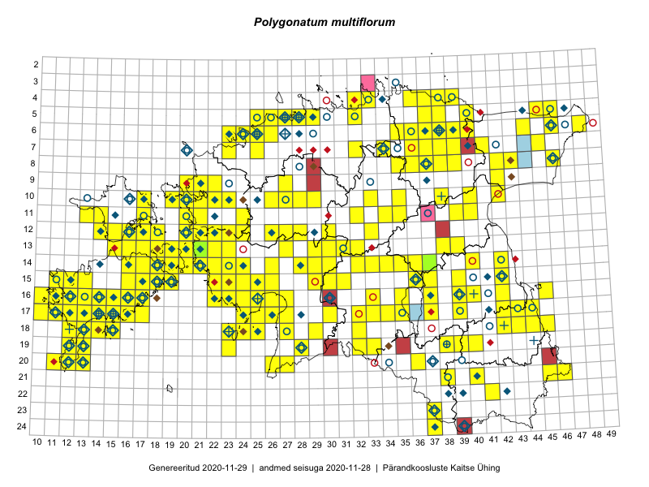

Polygonatum multiflorum
Uuendatud: 2016-12-02
Kaardile koondatud taksonid: Polygonatum multiflorum (L.) All.

Kaart põhineb 293 vaatlusel. Taksonit on leitud 181 ruudust.
Kuvatud viited 20 esimesele andmebaasikirjele, ülejäänud PlutoFis
- Thea Kull: 2015-04-27: 07-45: ala
- Peedu Saar: 2015-05-09: 13-30: ala
- Peedu Saar, Timo Luhamäe: 2015-05-12: 07-36: ala
- Peedu Saar: 2015-05-14: 10-42: ala
- Thea Kull: 2015-07-07: 16-40: ala
- Peedu Saar, Liina Oja: 2015-05-21: 16-24: ala
- Peedu Saar, Liina Oja: 2015-05-15: 16-23: ala
- Peedu Saar, Toomas Kukk: 2015-05-28: 11-17: ala
- Toomas Kukk, Eerik Leibak: 2015-08-08: 15-18: ala
- Toomas Kukk, Indrek Tammekänd: 2015-05-09: 13-27: ala
- Toomas Kukk, Ott Luuk, Peedu Saar, Indrek Tammekänd, Timo Luhamäe, Jana-Maria Habicht, Ester Valdvee: 2015-05-09: 13-30: GPS punkt
- Toomas Kukk, Peedu Saar: 2014-09-24: 06-40: ala
- Tiit Hallikma, Toomas Kukk: 2015-07-21: 05-45: ala
- Peedu Saar, Liina Oja: 2015-06-08: 10-33: GPS punkt
- Toomas Kukk, Raivo Kalle: 2015-05-13: 06-38: ala
- Toomas Kukk, Raivo Kalle: 2015-05-13: 07-38: ala
- Toomas Kukk, Raivo Kalle: 2015-05-12: 10-40: ala
- Peedu Saar, Ott Luuk: 2015-06-21: 14-42: ala
- Rein Kalamees, Kersti Püssa: 2015-05-28: 21-45: ala
- Rein Kalamees, Kersti Püssa: 2015-05-28: 21-46: ala